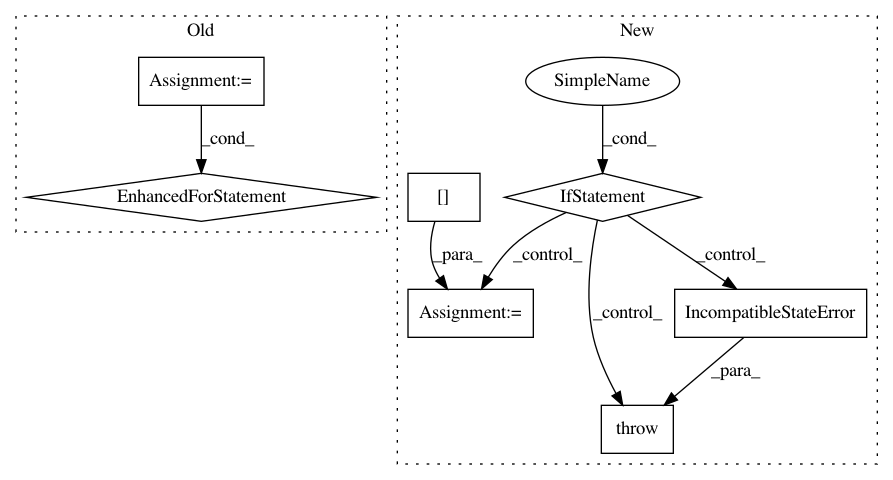

bcf723a2f67a372e6b03a453149a82ecf2766fff,theanolm/network.py,Architecture,check_state,#Architecture#Any#,118
Before Change
"Parameter "arch.layers" is missing from neural network state.")
// An ugly workaround to be able to save arbitrary data in a .npz file.
try:
dummy_dict = state["arch.layers"][()]
except KeyError:
dummy_dict = state["arch.layers"]
state_layers = dummy_dict["data"]
for layer1, layer2 in zip(self.layers, state_layers):
if layer1["type"] != layer2["type"]:
raise IncompatibleStateError(
"Neural network state has {0}={1}, while this architecture "
"has {0}={2}.".format("type", layer2["type"], layer1["type"]))
if layer1["name"] != layer2["name"]:
raise IncompatibleStateError(
"Neural network state has {0}={1}, while this architecture "
"has {0}={2}.".format("name", layer2["name"], layer1["name"]))
if layer1["output"] != layer2["output"]:
raise IncompatibleStateError(
"Neural network state has {0}={1}, while this architecture "
"has {0}={2}.".format("output", layer2["output"], layer1["output"]))
def __init__(self, dictionary, architecture, batch_processing=True, profile=False):
Initializes the neural network parameters for all layers, and
creates Theano shared variables from them.
After Change
for layer_id, layer in enumerate(self.layers):
h5_layer = h5_layers[str(layer_id)]
for variable, values in layer.items():
if isinstance(values, list):
h5_values = h5_layer[variable]
for value_id, value in enumerate(values):
h5_value = h5_values.attrs[str(value_id)]
if value != h5_value:
raise IncompatibleStateError(
"Neural network state has {0}={1}, while "
"this architecture has {0}={2}.".format(
variable, value, h5_value))
else:
h5_value = h5_layer.attrs[variable]
if values != h5_value:
raise IncompatibleStateError(
"Neural network state has {0}={1}, while "
"this architecture has {0}={2}.".format(
variable, value, h5_value))
def __init__(self, dictionary, architecture, batch_processing=True, profile=False):
Initializes the neural network parameters for all layers, and
creates Theano shared variables from them.
In pattern: SUPERPATTERN
Frequency: 3
Non-data size: 7
Instances
Project Name: senarvi/theanolm
Commit Name: bcf723a2f67a372e6b03a453149a82ecf2766fff
Time: 2015-12-24
Author: seppo.git@marjaniemi.com
File Name: theanolm/network.py
Class Name: Architecture
Method Name: check_state
Project Name: senarvi/theanolm
Commit Name: 0375cb0a69852f21f19c8568b4a37128d4407fc0
Time: 2016-04-12
Author: seppo.git@marjaniemi.com
File Name: theanolm/architecture.py
Class Name: Architecture
Method Name: from_state
Project Name: senarvi/theanolm
Commit Name: 0375cb0a69852f21f19c8568b4a37128d4407fc0
Time: 2016-04-12
Author: seppo.git@marjaniemi.com
File Name: theanolm/architecture.py
Class Name: Architecture
Method Name: check_state